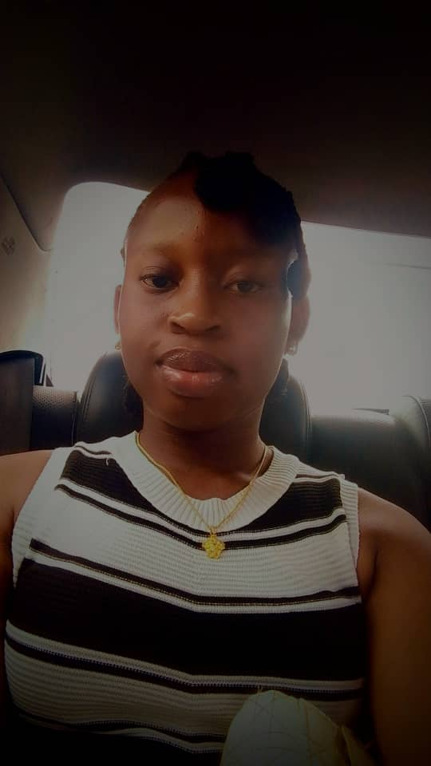

Hello! I'm Victory Awa, a Computer Science student at Miva Open University with a strong interest in Frontend Development and Graphic Design. I enjoy building responsive websites using HTML, CSS and JavaScript, as well as creating professional logos, flyers, banners and social media graphics. I believe in continuous learning and enjoy applying my knowledge through practical projects that improve both my programming and design skills.
View My WorkStarted designing logos, flyers, banners and branding materials, building creativity and visual communication skills.
Began learning HTML, CSS and JavaScript, creating responsive websites and interactive user interfaces.
Currently studying Computer Science while developing practical software and web development skills through real projects.